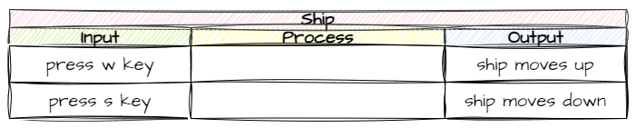

Spaceship Object#
Every game needs a player avatar, and for our game it will be a spaceship. In this lesson we are going to create a spaceship and make it move up and down the screen in response to the player.
Pygame Graphics#
Now that we are starting to work with sprites and graphics, we need to look a bit deeper at how graphics works in GameFrame. Since GameFrame is built on Pygame this mean understanding how Pygame handles graphics.
Graphics refresher
Computer screens are made up of millions of little dots called pixels. Each pixel be more than 16 million colours.
Each pixel has a coordinate made up of its x value (horizontal position) and its y value (vertical position). These coordinates are written as (x, y).
We will use the image below to explore graphics in Pygame.

The screen#
Pygame follows the common convention of have the (0,0) coordinate in the top lefthand corner of the screen, with the x value increasing as you move left and the y value increasing as you move down. This means that the largest coordinate value is the bottom righthand corner. Looking at our diagram this is (1280, 800). The boundaries of the screen are:
Value |
Range |
|---|---|
x |
greater than |
y |
greater than |
Objects#
All objects placed on the screen have three values:
coordinates (x, y)
width in pixels
height in pixels
But if the object size is greater than one pixel, it will cover many coordinates. To deal with this issue objects are said to have an origin, and this is its coordinate. For objects with sprites, this is the top lefthand corner.
Using these three values, you can work out the corners of the object. Check the purple object in the diagram.
Corner |
Calculation |
|---|---|
top-left (origin) |
(x, y) |
top-right |
(x + width, y) |
bottom-left |
(x, y + height) |
bottom-right |
(x + width, y + height) |
Let’s look at this in practice with the green object. It’s origin is (200, 450), width is 100 and height is 100.
Corner |
Calculation |
Value |
|---|---|---|
top-left (origin) |
(x, y) |
(200, 450) |
top-right |
(x + width, y) |
(300, 450) |
bottom-left |
(x, y + height) |
(200, 550) |
bottom-right |
(x + width, y + height) |
(300, 500) |
Movement#
We can make an object move around the screen by changing its origin coordinates.
Coordinate change |
Resulting Movement |
|---|---|
Increase in x |
Object moves to the right |
Decrease in x |
Object moves to the left |
Increase in y |
Object moves down |
Decrease in y |
Object moves up |
Planning#
To plan what our objects are going to do, we’re going to use an Input Process Output table (IPO).
To complete and IPO table
Start with the desired output
Identify from the available inputs an appropriate trigger
Work out what process need to occur to move from input to output
Output#
Lets think about what we want our spaceship to do. For this lesson, we’re going to focus on moving the ship up and down. So that is our output.

Input#
What are our input options? Well our computers offer different types of input. Keyboard and mouse are the most common type. Ultimately, its an arbitrary choice, but lets go with keyboard. The next question is which keys? The most common keys used for up and down in games are W and S, so lets use them.

Process#
So how are we going to get the ship to move up and down in response to key presses. If we think about how Pygame handles graphics, we will have to change the y value of the object’s origin, decreasing it when W is pressed and increasing it when S is pressed. How are we going to do that?
Let’s check the GameFrame docs to see if there are any RoomObject variables or methods that could help us. They show two possible variables.
We could change the value of y, but that would results in only one change per press. meaning the player would have to repeatedly pressing keys to keep the spaceship moving. That doesn’t sound like the best option.
We could change the value of y_speed. The docs say that this represents the number of pixels the object is moving in the vertical direction every frame. So we could set that to a number, for example -10 for up and 10 for down. That way the ship will keep moving once the player presses the button. This sounds like our best bet.
That’s the planning finished, now time to implement it.
Adding Spaceship RoomObject#
Adding the Spaceship RoomObject will initially follow the same steps as the Title RoomObject.
define the Ship RoomObject class
Initialise the Ship RoomObject class
Add an image to the Ship RoomObject class
Add Ship RoomObject class to
Objects/__init__.pyAdd Ship object to GamePlay Room
Register Ship RoomObject class to handle key events
Define Ship RoomObject’s keypress method
Creating Ship RoomObject#
Objects/Ship.py#
Go to the Objects folder and create a new file called Ship.py.
Open Ship.py and add the following code:
1from GameFrame import RoomObject
2
3class Ship(RoomObject):
4 """
5 A class for the player's avitar (the Ship)
6 """
7
8 def __init__(self, room, x, y):
9 """
10 Initialise the Ship object
11 """
12 RoomObject.__init__(self, room, x, y)
13
14 # set image
15 image = self.load_image("Ship.png")
16 self.set_image(image,100,100)
Save Ship.py
Objects/__init__.py#
Open Objects/__init__.py and add the highlight code below:
1from Objects.Title import Title
2from Objects.Ship import Ship
Save Objects/__init__.py and close it.
Rooms/GamePlay.py#
In the Rooms folder open the GamePlay.py file and add the highlighted code below:
1from GameFrame import Level
2from Objects.Ship import Ship
3
4class GamePlay(Level):
5 def __init__(self, screen, joysticks):
6 Level.__init__(self, screen, joysticks)
7
8 # set background image
9 self.set_background_image("Background.png")
10
11 # add objects
12 self.add_room_object(Ship(self, 25, 50))
Save and close GamePlay.py.
By this stage we should have a spaceship in our GamePlay room, so let’s test this.
Run MainController.py
Making the Ship RoomObject move#
Objects/Ship.py#
Open Objects/Ship.py and add the following highlighted code:
1from GameFrame import RoomObject
2import pygame
3
4class Ship(RoomObject):
5 """
6 A class for the player's avitar (the Ship)
7 """
8
9 def __init__(self, room, x, y):
10 """
11 Initialise the Ship object
12 """
13 RoomObject.__init__(self, room, x, y)
14
15 # set image
16 image = self.load_image("Ship.png")
17 self.set_image(image,100,100)
18
19 # register events
20 self.handle_key_events = True
21
22 def key_pressed(self, key):
23 """
24 Respond to keypress up and down
25 """
26
27 if key[pygame.K_w]:
28 self.y_speed = -10
29 elif key[pygame.K_s]:
30 self.y_speed = 10
This is the first bit of code with something a little different, so we will unpack it.
lines 19-25: should be familiar since we created a key press handler for the Title RoomObject.
lines 27-28: changes the value of this object’s
y_speedto-10(up) whenkeyis wlines 29-30: changes the value of this object’s
y_speedto10(down) whenkeyis s
So you ship should be moving now. Save Ship.py and then run the game using MainController.py
Commit and Push#
We have finished and tested another section of code so you know what you should do - commit and push.
To do this:
In GitHub Desktop go to the bottom left-hand box and write into the summary
Created Spaceship object.Click on Commit to main
Click on Push origin
Now the work from this lesson is committed and synced with the online repo.
Completed file states#
Below are all the files we used in this lesson in their finished state. Use this to check if your code is correct.
Objects/Ship.py#
1from GameFrame import RoomObject
2import pygame
3
4class Ship(RoomObject):
5 """
6 A class for the player's avitar (the Ship)
7 """
8
9 def __init__(self, room, x, y):
10 """
11 Initialise the Ship object
12 """
13 RoomObject.__init__(self, room, x, y)
14
15 # set image
16 image = self.load_image("Ship.png")
17 self.set_image(image,100,100)
18
19 # register events
20 self.handle_key_events = True
21
22 def key_pressed(self, key):
23 """
24 Respond to keypress up and down
25 """
26
27 if key[pygame.K_w]:
28 self.y_speed = -10
29 elif key[pygame.K_s]:
30 self.y_speed = 10
Objects/__init__.py#
1from Objects.Title import Title
2from Objects.Ship import Ship
Rooms/GamePlay.py#
1from GameFrame import Level
2from Objects.Ship import Ship
3
4class GamePlay(Level):
5 def __init__(self, screen, joysticks):
6 Level.__init__(self, screen, joysticks)
7
8 # set background image
9 self.set_background_image("Background.png")
10
11 # add objects
12 self.add_room_object(Ship(self, 25, 50))